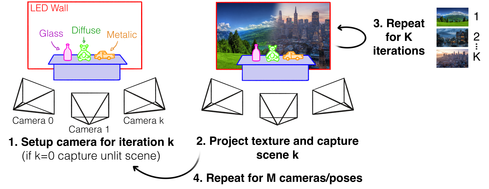

In the paper we rely on the datacapture methodology presented below to produce our three datasets under varying illumination. We only used a single camera
for capturing scenes which takes considerably longer to accomplish. To support others in similar situations we will present tips and tricks below.

1. Establishing Dimensionality and Selecting Poses for Capture
On a scale of 2.5D to 3D, how 3D do you want you data? Capturing VP content limits data to proscenium views, so full 3D is not possible unless you are able
to insert cameras into the LED wall. However, a large spread of cameras around the 2.5D scene will enable you to infer a greater range of novel views. Hence,
the distribution of cameras directly affects the type of shots that can be captured. However, if you are running on a tight budget and have few cameras,
as in our case, a wide distribution will results in worse reconstruction results so will negatively impact the quality of the final show. Clearly, related
works on sparse-view reconstruction becomes relevant, though we leave this for future work to investigate optimizing reconstruction quality under sparse-view conditions
; as discussed in the Appendix.
In our case, with 18 training views, the radial spread of cameras for each datase is under 135Deg. We find that the geometric reconstruction quality for
Dataset 1 and 2 is decent while for Dataset 3 shows various view-dependent geometry artifacts. The reason Dataset 3 fails to avoid over-fitting artifacts is
due to scale of the important foreground objects, w.r.t the remainder of the scene. In Dataset 1 and 2, the coverage of the tables that the objects sit onto
is rougly propotional to the volume of the target objects. Whereas, in Dataset 3 the coverage of the floor is significantly grater than that of the objects,
therefore much less resources are attributed to target objects during training (under our loss scheme). This highlights a potential need for future work
to establish a means of attributing larger gradients to areas of higher importance, as simply using the panoptic loss function (as we have done) is not sufficient.
Therefore, when designing data capture you will need to consider the radial spread w.r.t the number of cameras you have as well as the pixel coverage
of the target objects in comparison to the remainder of the 3-D scene. You however, do not need to consider the pixel coverage of the LED wall/RIC-IBL
source as this is masked out during training.
2. Selecting Textures based on Capture Limitations
Following the conclusions reached in the paper regarding RIC-IBL texture diversity for improving VSR, ideally users would select a large set of high frequency
backgrounds to illuminate the scene during capture. However, this is not always feasible, especially when dealing with dynamic content (in future applications).
Therefore, the optimal approach uses a sparse set of RIC-IBL textures to illuminate the scene for training (when K-> 1), where the textures used are locally unique and
high in frequency density. However, this does not actually have to be the case. For example, if you indend on capturing a specific background composition (e.g. a
low laying mountainous landscape), but have not yet decided what it will look like, it may be more effective and less probelamtic to simply capture the
3D scene under illumination conditions (i.e. RIC-IBL textures) that align with the expected background content.
3. Potential Options for Dynamic Scene Capture
The main limitation with capturing dynamic scene under varying illumination is that changing the RIC-IBL background throughout a performance will distract
the actor and potentiall lead to worse performances. Hence, there are various approaches to capture and reconstruction that cmay preserve actor immersion.
First, the use of dynamic/video backgrounds naturally provides texture diversity without significantly changing the background content. In this case, the degree of frame differences is tied to the diversity of the texture, as not all dynamic changes may be significant enough to support the amount of texture diversity our method requires for VSR. In relation to the conclusions reached in the paper, future work could invesigate the perceptual challenge of designing dynamic backgrounds that preserve actor immersion while enahncing reconstruction quality.
Second, the paper demonstrates that VSR still produces acceptable results using the K=1 capture condition. This requires capturing the scene with (1)
no RIC-IBL illumination and (2) with RIC-IBL illuminations. In this case, we note that the VSR pipeline was initially designed to support downstream
dynamic applications - the design of the canonical representation is no coincidence. Most current dynamic GS methods operate using deformation
fields that model residual changes w.r.t a canonical representations. In many cases, the canonical representation models a specific point in time t=T seconds.
This could be taken advantage of by capturing a canonical (unlit) representation e.g. at t=0s. The LED background could then be switched on for the remainder
of the shot t>0s, to satisfy the K=1 VSR condition. In principle the canon event could even be captured some time before t=0s, which would allow for a short pause in acting prior
to the illuminated performance while the LED wall is switched on (we experience a 10-20s delay with Partner-A's VS wall). Practical equivalents already
exist for this type of capture policy, whereby numerous studios already propose generating 3D assets of human actors prior to filming, then using the filmed
content to rig the human asset.